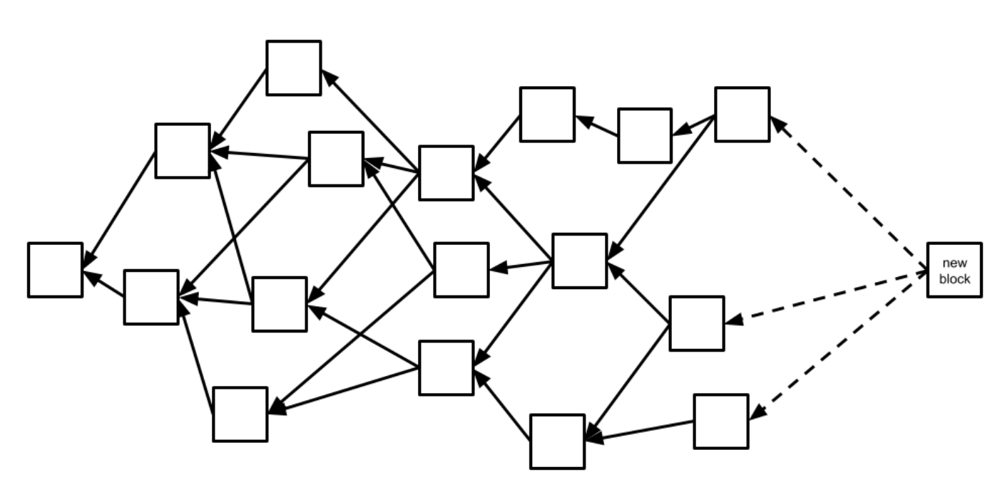
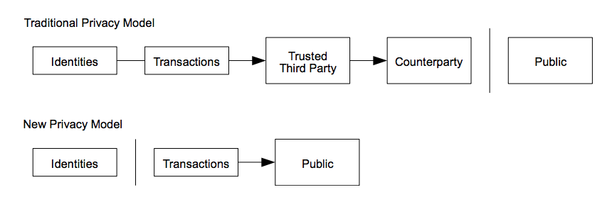
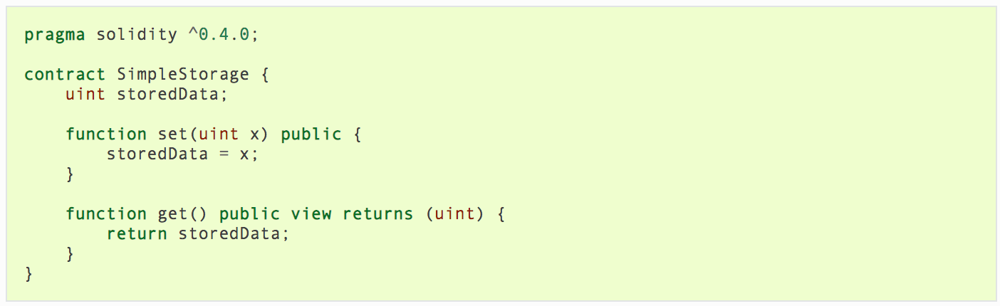
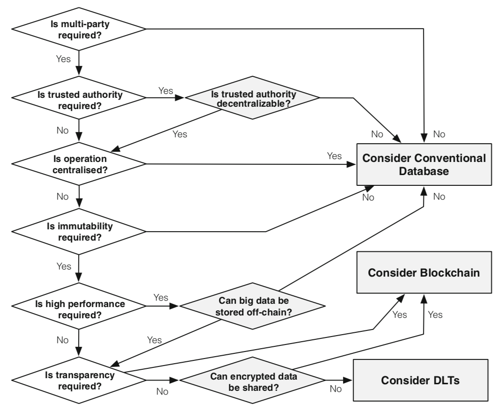
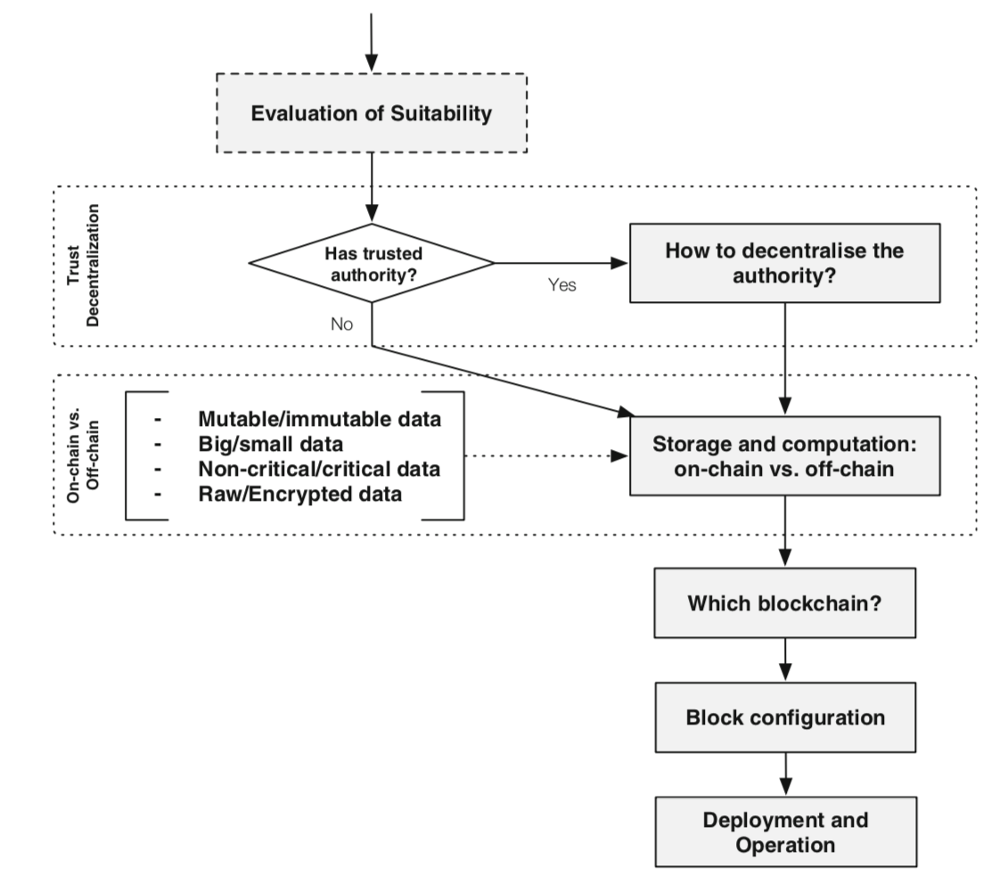

class: center, middle #Blockchain *Jendrik Müller* --- # Fahrplan 1. Einleitung 2. Funktionsweise der Blockchain 3. Smart Contracts 4. Variationen der Blockchain 5. Existierende Blockchain Plattformen 6. Blockchain in der Software Architektur 7. Anwendungsfälle --- #Einleitung - Ursprünglich zur Erstellung eines unabhängigen Zahlungssystems - Austausch von Daten ohne vertrauenswürdige Dritte Partei - Die übertragenen Daten sollen nicht manipuliert und verändert werden können - Dies geschieht unter Verwendung bereits bekannter Technologien - Blockchain dient der Speicherung der Daten --- #Abgrenzung des Begriffes - **Ledger** - Transaktionsverzeichnis/Kontenbuch, in dem alle Transaktionen aufgeführt werden - **Distributed Ledger** - Ledger die an mehrere Rechner verteilt wird - Es können dabei nur Transaktionen hinzugefügt werden - **Blockchain** - Distributed Ledger, die aus verknüpften Blöcken besteht - Jeder Block beinhaltet einen Satz Transaktionen - **Datenbank** - Meist Client-Server Aufbau - Daten in der Regel veränderbar --- #Grundlegende Technologien - zugrundeliegende Technologien bereits gut erforscht - Neuerung besteht darin, wie diese Verwendet werden - Die Technologien stammen aus der Informatik beziehungsweise Kryptographie - Hash-Funktionen - Kryptographische Puzzle - Hash-Bäume - Digitale Signaturen --- #Hash-Funktionen - Bilden eine Eingabemenge beliebiger Größe auf einen Zielbereich fixer Größe ab - verschiedene Eingabewerte sollen dabei möglichst unterschiedliche Zielwerte haben - Zielbereich muss gut ausgenutzt werden - der generierte Zielwert (Hash) kann zur Überprüfung der Unversehrtheit eines Dokumentes dienen - bei Blockchains kryptische Hashwerte an die sich folgende Anforderungen stellen: - starke Kollisionsresistenz - praktisch unmöglich von Zielwert auf Eingabewert zu schließen - unmöglich durch Variation des Eingabewertes einen bestimmten Zielwert zu erzeugen --- #Beispiel Hashwerte --- #Kryptographische Puzzle - verwenden kryptische Hash-Funktionen - Ziel ist es Eingabewert zu variieren, sodass Zielwert in bestimmten Bereich liegt - Bsp: Variiere "A bezahlt B 2 Bitcoin. & X" sodass SHA-256-Hash-Wert mit 0 beginnt - **Beispiel Variationen** --- #Anwendungsfall der Kryptischen Puzzle - ermöglichen zufällige Auswahl eines Teilnehmers in einem Netzwerk - zentrale Stelle ist dabei nicht notwendig - Puzzle wird im Netzwerk veröffentlich und Teilnehmer versuchen es gleichzeitig zu lösen - der Teilnehmer der das Puzzle löst wird ausgewählt - da Teilnehmer nur mögliche Lösungen durchprobieren können Auswahl zufällig --- #Hash-Bäume --- #Digitale Signaturen - basieren auf asymmetrischen Verschlüsselungsverfahren - Kommunikationspartner besitzen privaten und öffentlichen Schlüssel - öffentlicher Schlüssel für jeden einsehbar - privater Schlüssel geheim und lokal gespeichert - Mit einem Schlüssel verschlüsselte Nachricht kann mit dem gegenstück entschlüsselt werden - <img src="./img/Digitale_Signaturen.png" width="600" height="200" /> **Erstellung einer Signatur für die Nachricht von Alice** --- #Was ist ein Coin? <img src="./img/transaktionen.png" width="700" height="400" /> --- #Funktionsweise der Blockchain - Kernstück der Blockchain ist ein "Block" als Datenstruktur - Speichert Transaktionen - mehrere Transaktionen werden in einem Block gespeichert - Block mit Vorgänger Verknüpft - Generierung neuer Blöcke geschiet in bestimmten Abständen --- #Aufbau der Blockchain <img src="./img/Blockchain_Aufbau.png" width="700" height="450" /> --- #Ablauf im Netzwerk 1. Neue Transaktionen werden an alle Knoten übertragen 2. Jeder Knoten kombiniert die Transaktionen zu einen neuen Block 3. Jeder Knoten sucht nach einer Lösung für das kryptographische Puzzle 4. Wenn ein Block eine Lösung gefunden hat überträgt er diese an alle anderen Knoten 5. Knoten akzeptieren einen Block, wenn alle Transaktionen valide und keine doppelte Ausgabe vorliegt 6. Knoten drücken die Akzeptanz eines Blockes aus, indem sie an dem nächsten Block weiterarbeiten und den Hash des akzeptirten Blockes als Hash für den vorgänger Knoten verwenden. --- #Wallet - digitale Geldbörse - besitzen eindeutige ID - dient dem speichern mehrerer privater Schlüssel --- #Smart Contracts - neben Transaktionen lassen sich weitere Daten auf der Blockchain speichern - Smart Contracts sind Programme die als Daten in der Blockchain gespeichert werden - Können durch Transaktionen auf der Blockchain ausgeführt werden - Smart Contracts können sich gegenseitig aufrufen - können Daten speichern und verändern, die Teil der Blockchain sind - Deterministisch und immutable nachdem sie veröffentlicht wurden - genaue Definition varieret zwischen verschiedenen Plattformen --- class: center, middle #Variationen der Blockchain und Distributed Ledger Technologie --- #Dezentralisierung <img src="./img/dezentralisierung.png" width="700" height="300" /> --- #Ledger Struktur - Aufbau der Ledger kann unterschiedlich gestaltet sein - als Baum von verknüpften Blöcken (Blockchain) - unterschiedliche Zweige stellen alternative Historien dar - directed acrylic graph - ermöglichen Direkte kommunikation zwischen Knoten  --- #Ledger Struktur <img src="./img/ledger_struktur.png" width="700" height="250" /> --- #Consensus Protokoll - Problem: - zwei Knoten erstellen gleichzeitig einen neuen Block - neue Blöcke kommen in unterschiedlicher Reihenfolge bei anderen Knoten an - Consensus Protokoll regelt die Entscheidung, welcher Block weiterverwendet werden soll - Nakamoto Protokoll: - Knoten arbeiten an Block weiter, den sie zuerst bekommen haben - anderer Block wird ebenfalls abgespeichert - sobald eine Blockkette länger wird, wird die andere verworfen - proof-of-stake: - Ersteller des Blockes wird anhand seiner Anteile an der nativen Währung des Systems ausgewählt --- #Block Konfiguration - Anzahl/Komplexität der Transaktionen innerhalb eines Blockes - Wirkt sich aus auf: - Zeit zwischen Erstellungen von neuen Blöcken - Verarbeitungsgeschwindigkeit von Transaktionen - Geschwindigkeit der Replikation - Extrembeispiel: kein Limit für die Größe eines Blockes - System könnte mit Transaktionen geflutet werden - menge der Transaktionen schwerer zu verarbeiten --- #Anonymität - unterschiedliche Grade der Anonymität - Identitäten sind bekannt vs anonymisiert - bei öffentlichen Transaktionen können immernoch Rückschlüsse auf Sender und Empfänger gezogen werden - zero-knowgledge Blockchains - Transaktionsmenge, Sender und Empfänger verschlüsselt  --- #Anreize - unterschiedliche Anreize dem Netzwerk beizutreten - vor allem Bestandteil bei Blockchains mit eigenen Kryptowährungen - finanzielle Belohnungen für erledigen von Aufgaben - erstellen neuer Blöcke - ausführen von Smart-Contracts - validieren von Transaktionen - finanzielle Belohnungen können Transaktionskosten oder neue Coins sein --- #Bitcoin - Konzept erstmals 2008 in dem Paper "Bitcoin: A Peer-to-Peer Electronic Cash System" vorgestellt - Paper wurde unter dem Pseudonym Satoshi Nakamoto veröffentlicht - erster Anwendungsfall der Blockchain - Beweis für Machbarkeit einer elektronischen Währung ohne vertrauenswürdige Partei - Open-Source Projekt - neue Blöcke werden alle 10 Minuten erstellt - Blockgröße auf 1MB festgelegt - Smart Contracts auf Transaktionen der Währung beschränkt --- #Bitcoin-Mining - erste Transaktion in einem Block ist speziell beginn eines neuen Coins - neuer Coin wird dem Ersteller des Blockes zugeschrieben - Bestand der Bitcoins ist auf 20 Millionen beschränkt - Belohnung für Bitcoin Mining verringert sich und soll inal aus den Transaktionskosten bestehen - soll Anreiz bieten mit dem Netzwerk zusammen statt gegen das Netzwerk zu arbeiten --- #Facebook Libra - von Facebook entwickelte Kryptowährung - Prototyp Open Source - Ziel ist Erstellung eines Globalen Zahlungssystems: - Skalierbar - Sicher - schnelle Abwicklung von Transaktionen - stabil gegenüber Kursschwankungen - Smart Contracts können mit der dafür entwickelten Programmiersprache Move erstellt werden --- #Hyperledger Fabric - Distributed Ledger Software - dient zum Entwickeln von dezentralen Anwendungen mit modularen Aufbau - Open Source - Grundlage von der Linux Foundation - IBM und Intel tragen zur Entwicklung bei - Blockchain ist privat - Teilnehmer müssen über einen membership service provide autorisiert werden - Teilnehmer haben bekannte Identitäten - öffentliche Schlüssel als Zertifikate, die mit Person/Organisation/etc kombiniert werden --- # Hyperledger Fabric - Smart Contracts werden als Docker Container erstellt - Entwicklung der Smart Contracts (genannt Chaincode) in Programmiersprachen wie Go und Java --- #Ethereum - Open-Source Platform zum Erstellen dezentraler Anwendungen - mit Schwerpunkt auf die Verwendung von Smart-Contracts entwickelt - beinhaltet native Kryptowährung namens Ether - neue Blöcke werden alle 13-15 Sekunden generiert - dadurch häufiger kollision verschiedener Blöcke --- #GHOST Protokoll - Ethereum verwendet modifizierte Version des Greedy Heaviest Observed Subtree (GHOST) Protokolls <img src="./img/ethreum_uncle.png" width="700" height="425" /> --- #Smart Contracts in Ethereum - werden in dafür erstellter Sprache Solidity erstellt  --- #Beispiel Anwendungen in Ethereum - Gods Unchained - digitales Sammelkartenspiel ähnlich Hearthstone und Magic - Karten können für echtes Geld verkauft werden - der Besitz und das Übertragen einer Karte wird mir der Blockchain überwacht (on-chain) - eigentliches Spiel seperat von der Blockchain gespeichert (off-chain) - Dezentraland - dezentrale virtuelle Welt - Spieler können über Smart-Contracts Funktionsweise der Welt beeinflussen --- class: center, middle #Blockchain in der Softwarearchitektur --- #Blockchain als Komponente - Blockchain kann als einzelne Komponente einer Software betrachtet werden - es muss dabei entschieden werden, welche Funktionen von der Blockchain abgedeckt werden soll - wichtig welche Daten auf der Chain gespeichert werden sollen und welche nicht - Blockchain kann unterschiedlich eingesetzt werden - Speicherkomponente - Rechenkomponente - Kommunikationskomponente --- #Brauche ich eine Blockchain?  --- #Design Prozess Blockchain basierter Anwendungen  --- class: center, middle #Anwendungsfälle --- #Supply Chain **Situation** - Supply Chains sind wichtig für den Transport von Waren - Austausch von Informationen kann so wichtig sein wie die der Ware - mehrere Parteien sind an eine Supply Chain beteiligt - bei Nahrung erhöht Information, wo Nahrung erstellt und wie sie Transportiert wurde Lebensmittelsicherheit - aktuelle Pandemie zeigt Notwendigkeit für belastbare Lieferketten - transparenz - automatisierung --- #Supply Chain **Blockchain Lösung** - Teilnehmer der Supply Chain kommunizieren über die Blockchain - dies geschiet durch Aufrufen von Smart-Contracts - weisen Nachrichten ab, die an der falschen Stelle im Prozess stehen - Nachrichten werden nur von dazu berechtigten Teilnehmern akzeptiert - vorher definierte Bedingungen können direkt in Smart Contracts implementiert werden - aktuell Erstellung einer Blockchain Lösung von IBM mithilfe von Hyperledger Fabric --- #Maschine Learning - Blockchain als Basis für Austausch von Methadaten - eigentliche Dateien werden lokal gespeichert - solche Datenplatformen spielen bei maschinellem Lernen wichtige Rolle - Gerade in Branchen wo zugriff auf lokale Dateien für Dritte schwierig ist wichtig (z.B. Medizin) - Bisher dezentrale Verfügbarkeit von Daten durch folgende Dinge erschwert - fehlende Austauschmechanismen - Mangelnde Sicherheit und Schutz der Privatsphäre - Mangelnde Datenintegrität - Dateneigentum - Hohe Kosten für die zentrale Datenspeicherung --- #Maschine Learning - verwenden der Blockchain-Technologie zur Authentifizierung und Datenzugriffssteuerung - schafft zentrale überwachte Datenplattform - bietet zudem Verarbeitungs- und Analysedienste - jede Nutzung und Zugriff auf Daten wird in der Blockchain dokumentiert - erstellen eines Marktplatzes für den Austausch von Daten und ML-Modellen --- #Quellen - [1] [Blockchain - Grundlagen, Anwendungsszenarien und Nutzungspotenziale](https://link.springer.com/book/10.1007/978-3-658-28006-2) - [2] [Blockchain und maschinelles Lernen - Wie das maschinelle Lernen und die Distributed-Ledger-Technologie voneinander profitieren](https://link.springer.com/book/10.1007/978-3-662-60408-3) - [3] [Architecture for Blockchain Applications](https://link.springer.com/book/10.1007/978-3-030-03035-3) - [4] [Die Vorteile der Blockchain-Technologie](https://t3n.de/news/blockchain-statt-datenbank-diese-1063641) - [5] [Bitcoin: A Peer-to-Peer Electronic Cash System](https://bitcoin.org/bitcoin.pdf) - [6] https://github.com/bitcoin/bitcoin - [7] https://innovationsblog.dzbank.de/2017/07/03/bitcoin-in-zahlen-daten-und-fakten - [8] https://ethereum.org/de/ - [9] https://www.hyperledger.org/use/fabric - [10] https://www.informatik-aktuell.de/betrieb/virtualisierung/eine-blockchain-anwendung-mit-hyperledger-fabric-und-composer.html - [11] https://solidity.readthedocs.io/en/v0.6.10/introduction-to-smart-contracts.html - [12] https://www.heise.de/newsticker/meldung/Gods-Unchained-Eigene-Waehrung-und-Hype-um-digitale-Spielkarten-4469685.html --- #Quellen - [13] https://decentraland.org/ - [14] https://jaxenter.de/blockchain/blockchain-covid-19-corona-lieferketten-93881 - [15] https://blog.codecentric.de/en/2018/04/blockchain-application-fabric-composer/ - [16] https://www.ico.li/de/dag-vs-blockchain-de/ - [17] https://blog.daglabs.com/an-introduction-to-the-blockdag-paradigm-50027f44facb - [18] https://z.cash/technology/ --- class: center, middle # Fragen?